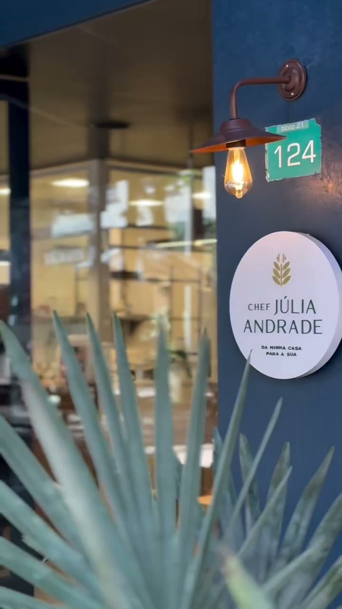
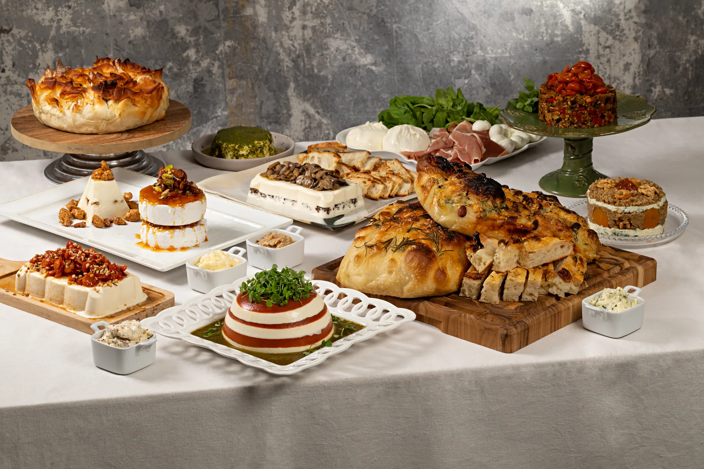
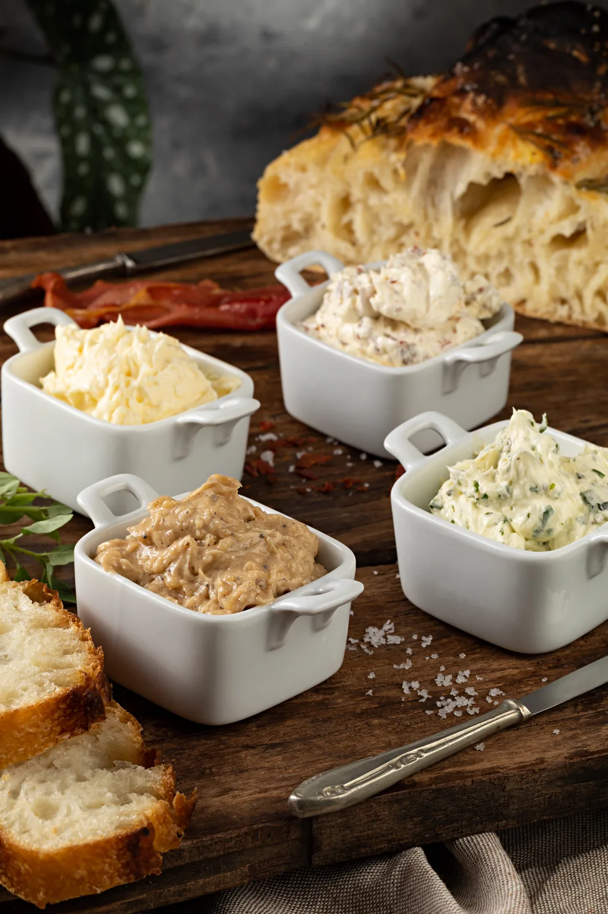
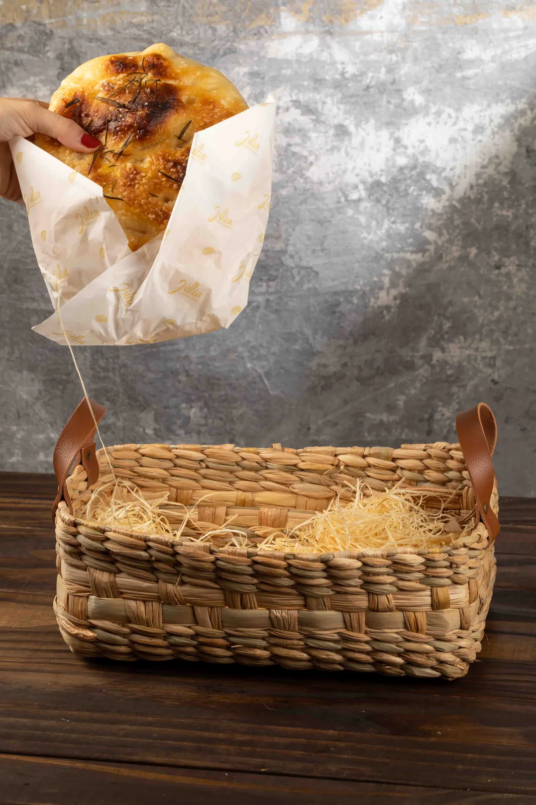
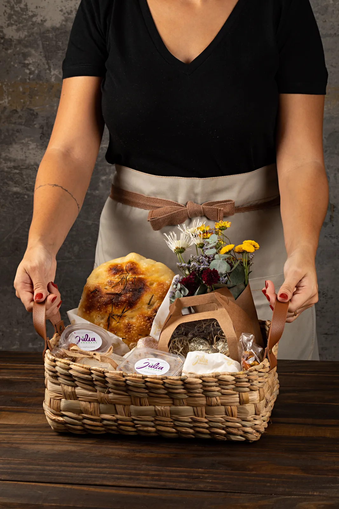
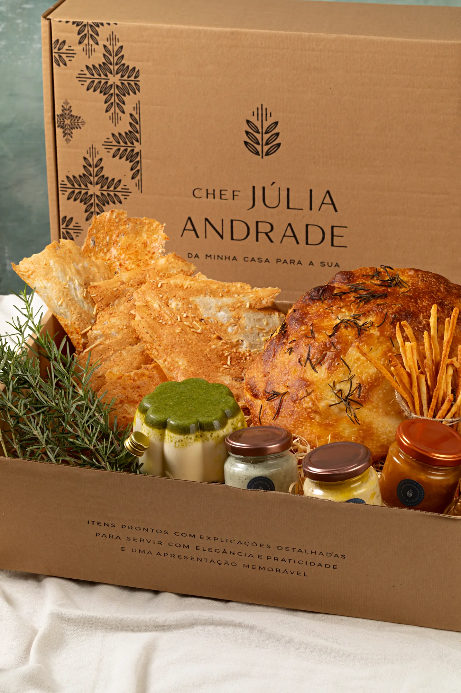
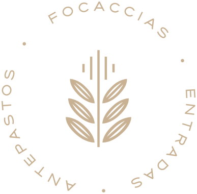

Delicatessen e café na Barra da Tijuca
A mesa posta chega pronta. Você só recebe.
Entradas, focaccias, terrines e sobremesas assinadas pela Chef Júlia Andrade. Você escolhe o que quer servir, recebe em casa no horário combinado e leva direto para a mesa.
- Pedido mínimo
- R$ 95
- Pedido no mesmo dia
- até 16h
- Entrega
- segunda a sábado
A DÉLI
A DÉLI é a delicatessen e o café da Chef Júlia Andrade na Barra da Tijuca, no Rio de Janeiro.
O trabalho começou em 2020, com focaccia feita em casa, e virou um negócio de entrega para quem precisa receber gente. Em abril de 2026 a cozinha ganhou endereço próprio no Shopping Downtown, onde funciona o café, a loja e a retirada dos pedidos.
Da minha casa para a sua

O espaço
Dá para entrar, tomar café e levar o pedido
A fachada azul com o selo da Chef abre para um balcão de café e uma vitrine com focaccia, croissant e éclair. As mesas ficam do lado de fora. É também onde os pedidos do delivery podem ser retirados.
O vídeo ao lado foi gravado na loja, sem produção. Ele mostra a entrada, a vitrine e as mesas como elas são em um dia comum.
- Onde fica
- Av. das Américas, 500, Loja 124, Bloco 21
Shopping Downtown, Barra da Tijuca - Horário
- De segunda a sábado, das 10:00 às 18:00
Domingo fechado

O que a DÉLI faz
Comida de entrada, pensada para servir fria ou morna

Mesa posta
A mesa inteira, não um prato só
Mesa posta é a recepção resolvida de uma vez: as entradas, os pães, as pastas, a carne fria e a sobremesa chegam juntos, na quantidade certa para o número de pessoas.
Como os produtos aguentam 5 dias e podem ser transportados, dá para receber o pedido antes e montar a mesa com calma no dia.
Como funciona
Do cardápio até a sua mesa em três passos

01Você escolhe no cardápio
O pedido é fechado no cardápio digital. O mínimo é de R$ 95 e o primeiro pedido tem 10% de desconto.

02A cozinha produz
Pedidos para o mesmo dia entram até as 16h de segunda a sexta e até as 13h no sábado. Feito com antecedência, o pedido garante horário definido de entrega.

03Chega pronto para servir
A entrega é de segunda a sábado, com frete por região. Os produtos duram no mínimo 5 dias e vão embalados para aguentar o transporte.

Para presentear
Caixas e cestas que chegam prontas de presente
As caixas e cestas saem montadas e fechadas, com a embalagem da casa. Servem para mandar um café da manhã, agradecer alguém ou levar em uma visita, e podem ser entregues em endereço diferente do de quem pediu.
Ver caixas e cestas no cardápioPerguntas frequentes

Não achou o que precisava? A gente responde pelo WhatsApp, de segunda a sábado.
Perguntar no WhatsApp- O que é a DÉLI By Chef Júlia Andrade?
- A DÉLI é uma delicatessen e café da Chef Júlia Andrade na Barra da Tijuca, no Rio de Janeiro, com entrega em boa parte da cidade. Ela vende focaccias, mousses, terrines, bries assados, quiches, carnes, sobremesas, cestas e kits prontos para quem vai receber gente em casa. O espaço físico fica na Avenida das Américas, 500, Loja 124, Bloco 21, no Shopping Downtown.
- Qual é o pedido mínimo da DÉLI?
- O pedido mínimo da DÉLI é de R$ 95. O valor não inclui o frete, que varia por região do Rio de Janeiro.
- Até que horas dá para pedir para receber no mesmo dia?
- Pedidos para o mesmo dia são aceitos até as 16h de segunda a sexta e até as 13h no sábado. Pedidos feitos com antecedência garantem horário definido de entrega, o que ajuda quando a comida precisa estar na mesa em um horário certo.
- Em quais dias e horários a DÉLI entrega?
- A DÉLI entrega de segunda a sábado. De segunda a sexta as entregas acontecem das 09h às 17h, e no sábado das 09h às 15h.
- Quanto custa a entrega?
- A taxa de entrega da DÉLI começa em R$ 20 na Barra da Tijuca, R$ 30 na Zona Sul e R$ 35 no Recreio dos Bandeirantes. Tijuca, Centro e Jacarepaguá custam R$ 40. Outras áreas dependem de consulta de disponibilidade e taxa.
- Quanto tempo os produtos duram depois da entrega?
- Os produtos têm validade mínima de 5 dias depois da entrega e podem ser transportados. Todos vão embalados para garantir a qualidade e o tempo fora da geladeira, o que permite levar a comida para outro endereço, como uma casa de praia ou um apartamento alugado.
- Como funciona o pagamento?
- Pedidos para o mesmo dia são pagos integralmente antes da entrega, por Pix, transferência ou cartão de crédito. Pedidos antecipados são confirmados com 50% no ato do pedido e os outros 50% até o dia anterior. A DÉLI não faz entrega sem o pagamento integral do pedido.
- A DÉLI monta a mesa e leva louça?
- Não. Os produtos são entregues em embalagens e formas descartáveis, prontos para montar e servir na hora da recepção, com orientações de armazenamento, montagem e acompanhamentos. Pratos, talheres, louças e serviço de montagem não estão incluídos no delivery.
- Onde fica a loja física da DÉLI e qual é o horário?
- A DÉLI fica na Avenida das Américas, 500, Loja 124, Bloco 21, no Shopping Downtown, na Barra da Tijuca, Rio de Janeiro. A loja funciona de segunda a sábado, das 10:00 às 18:00, e fechado aos domingos. É café, delicatessen e ponto de retirada dos pedidos.
- A DÉLI faz eventos?
- Sim. A DÉLI atende eventos a partir de 20 pessoas, com cardápio personalizado executado pela equipe da casa, com ilha gastronômica completa, serviço de canapés, mini porções opcionais e serviço de bebida volante. O serviço inclui equipe de cozinha, garçons e os utensílios necessários para servir. O orçamento é solicitado pelo WhatsApp.
- Preciso pedir sobremesa com antecedência?
- Sim. Todas as sobremesas da DÉLI são feitas sob encomenda, com antecedência mínima de 24 horas.